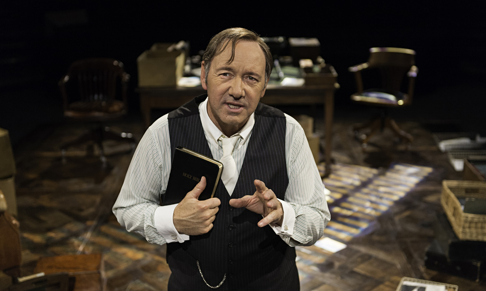

Descripcion 1

Spacey es sin duda uno de los grandes actores de carácter norteamericanos de nuestros días.[cita requerida] Ha ganado dos Óscar, uno como mejor actor de reparto y otro como mejor actor principal, este último por American Beauty en 1999. Recientemente, Spacey ha sido nombrado director artístico del teatro Old Vic en Londres, uno de los teatros más prestigiosos de lengua inglesa. Allí dirige una nueva compañía teatral, que actúa durante ocho meses al año, y de la que Spacey es también actor, además de director. Entre otras obras, estrenó en Londres Cloaca de la dramaturga Maria Goos. Fue nombrado Comendador (2010) y Caballero Comendador (2015) de la Orden del Imperio Británico. Una de sus últimas películas fue 21 blackjack donde interpretó al profesor Micky Rosa en 2008.